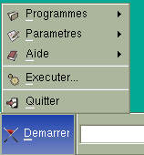
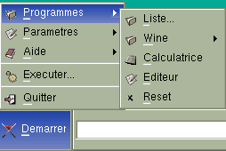
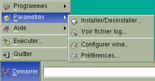
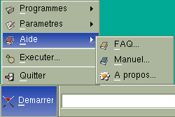
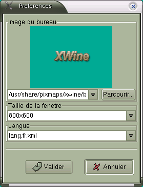

3.2. Le
Menu Démarrer
Lorsque vous lancez XWine, vous pouvez voir une fenêtre
qui ressemble beaucoup à l'interface de Ms-Windows, notament par
son
menu en bas à gauche qui se nomme "Démarrer". Nous allons
donc
décrire les actions que vous pouvez effectuer à partir de
ce
menu :

Programmes -> Permet
d'exécuter
des programmes sous Wine
Paramètres -> Permet de
configurer Wine ainsi que les programmes Ms-Windows
Aide
-> Permet d'obtenir de l'aide sur XWine
Exécuter ->
Permet de lancer un programme sous Wine (sans l'avoir configuré)
Quitter ->
Permet
de quitter XWine
3.2.1. Le Menu Programmes

Liste -> Permet d'obtenir
la
liste des programmes que l'on a configuré pour Wine.
Wine
-> Permet d'exécuter les programmes fournis par wine-utils
(si
installé)
Calculatrice -> Affiche une
petite
calculette
Editeur -> Affiche un petit
éditeur
de texte
Reset -> Permet de
réinitialiser
Wine (si celui-ci a planté)
3.2.2. Le Menu Paramètres

Installer
-> Permet de configurer des programmes pour Wine
Voir fichier log -> Permet
d'afficher
le fichier log de Wine
Configurer Wine ->
Affiche le panneau de configuration pour Wine
Préférences
-> Permet de configurer XWine
3.2.3. Le Menu Aide

FAQ
-> Affiche les Réponses aux Questions Fréquentes
Manuel -> Affiche
ce
Manuel Utilisateur
A propos -> Affiche la
boîte "A
propos" de XWine
3.3. La Configuration de XWine
La première chose à faire lorsqu'on exécute
XWine pour la
première
fois est de le configurer, pour cela il faut cliquer sur le menu
Démarrer->Paramètres->Préférences
:

Vous pouvez ici spécifier :
- l'image que vous souhaitez voir apparaître dans la
fenêtre
- la taille de la fenêtre de XWine
- la langue que vous voulez utiliser : par défaut vous aurez
le choix entre le français (lang.fr.xml) et l'anglais
(lang.en.xml),
mais vous pouvez très bien créer votre propre fichier de
langue
en
traduisant l'un des deux fichiers dans la langue de votre choix (par
exemple
créer le fichier lang.es.xml pour l'espagnol). Si vous changez
la
langue vous devrez redémarrer XWine
Une fois validé, XWine est prêt à fonctionner, nous
pouvons
passer
à l'étape suivante : Configurer Wine.